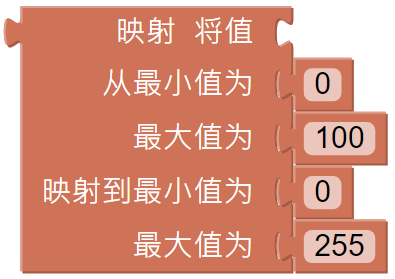

远程遥控¶
该项目将教授如何使用操纵杆小部件远程控制帕克。 注意：从远程控制页面拖放操纵杆小部件后，使用“映射”功能校准操纵杆 X 轴和 Y 轴读数。

提示

要使用远程控制功能，请从主页面左侧打开远程控制页面。

将操纵杆拖动到远程控制页面的中央区域。 切换中心的白点，并在任何方向轻轻拖动将产生 (X,Y) 坐标。 X 轴或 Y 轴的范围默认为“-100”到“100”。 切换白点并将其直接拖动到操纵杆的最左侧将导致 X 值为“-100”，Y 值为“0”。

在遥控器页面拖放一个小部件后，积木块栏会出现一个新的分类-远程遥控，上面会更新出新的块。 此块读取远程控制页面中的操纵杆值。 您可以单击下拉菜单切换到 Y 轴读数。
映射值块可以将数字从一个范围重新映射到另一个范围。 如果范围设置为 0 到 100，并且映射值为 50，则它位于范围的 50% 位置，即“50”。 如果范围设置为 0 到 255，并且映射值为 50，则它位于范围的 50% 位置，即“127.5”。
示例
Note
你可以直接打开我们提供的示例或者是按照下图来编写程序，详细教程请参考 打开或新建项目.
代码运行后，进入到远程控制页面，就可以使用摇杆来控制PiCar-X的移动。